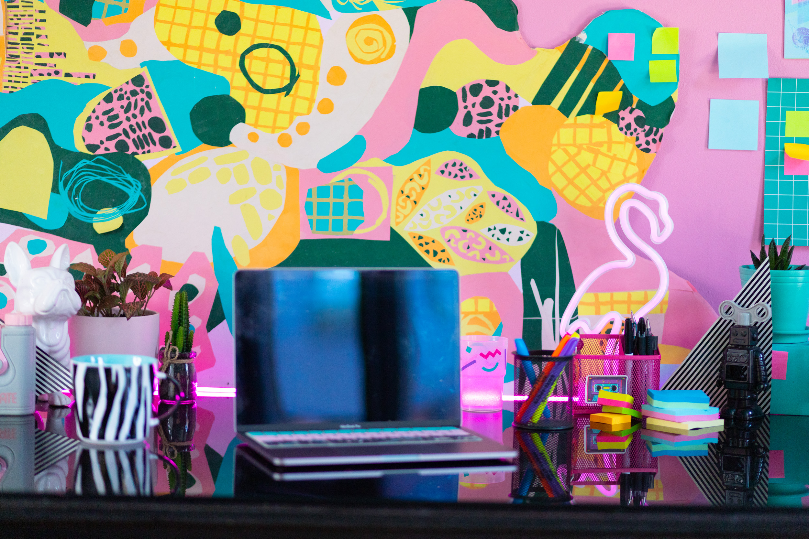
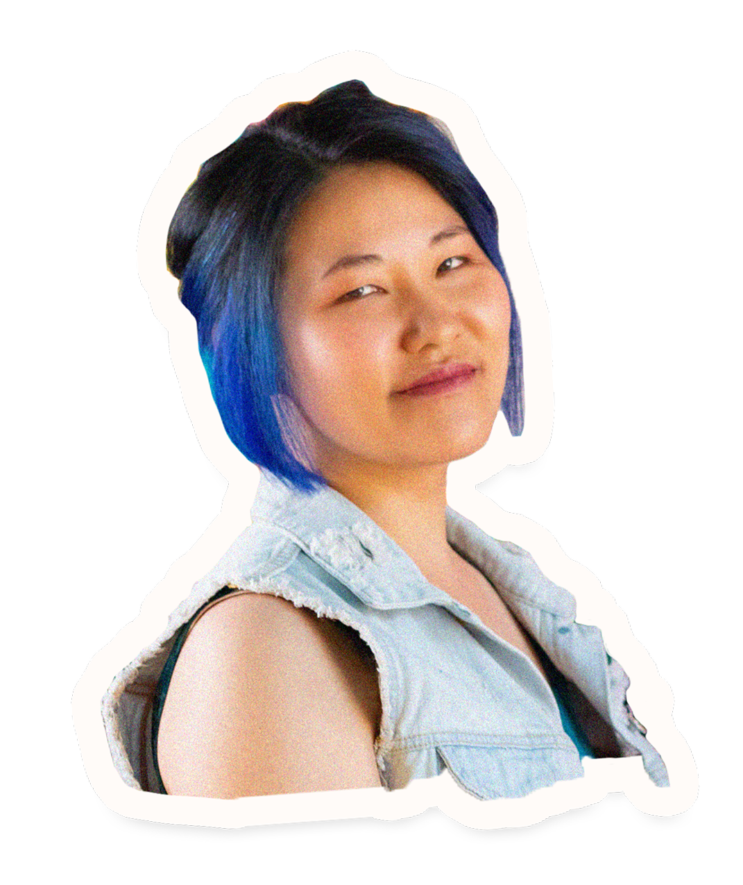
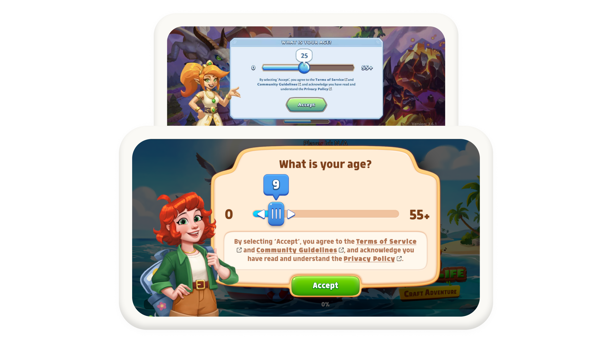
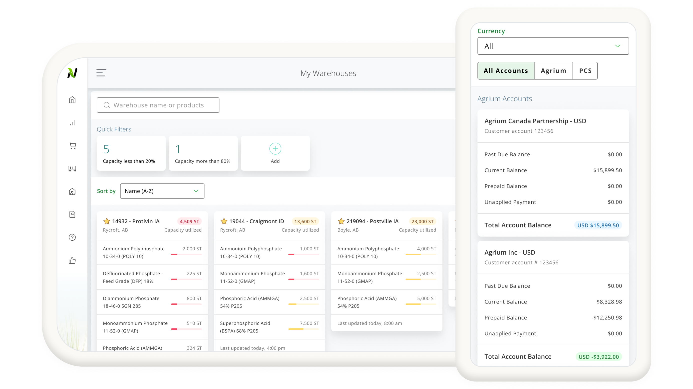
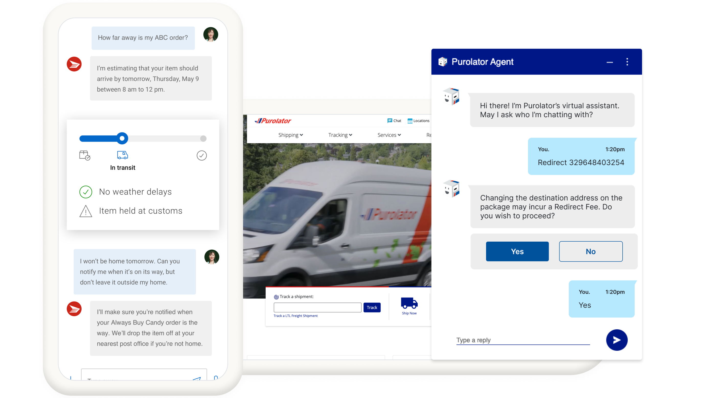
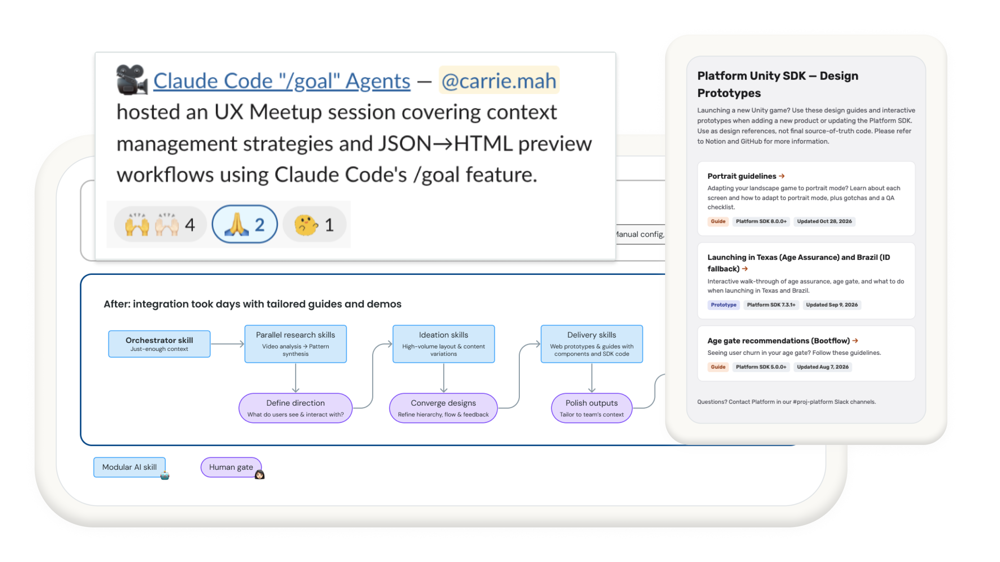

10+ years
Shipping regulated B2B platforms across NA, EU, APAC, and LATAM.


Shipping regulated B2B platforms across NA, EU, APAC, and LATAM.
Managed and coached designers from Junior to Staff.
Compliance product delivery cut using modular SDKs, agile delivery, and AI skills for project management.
Full interactive case study decks are password-protected under NDA.

After a merger left wholesale buyers on two legacy systems, I co-led product strategy, a design system, and 5 self-serve B2B products.


